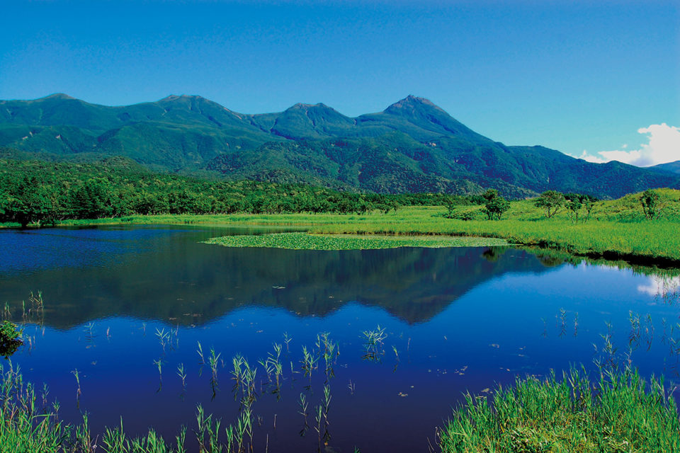
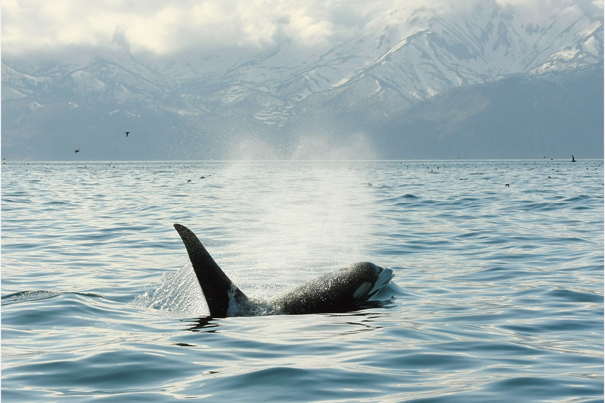
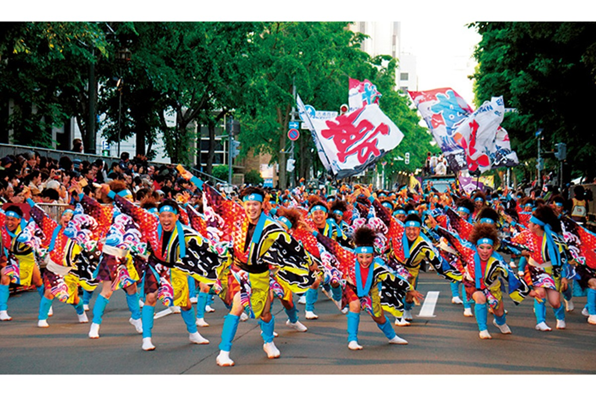
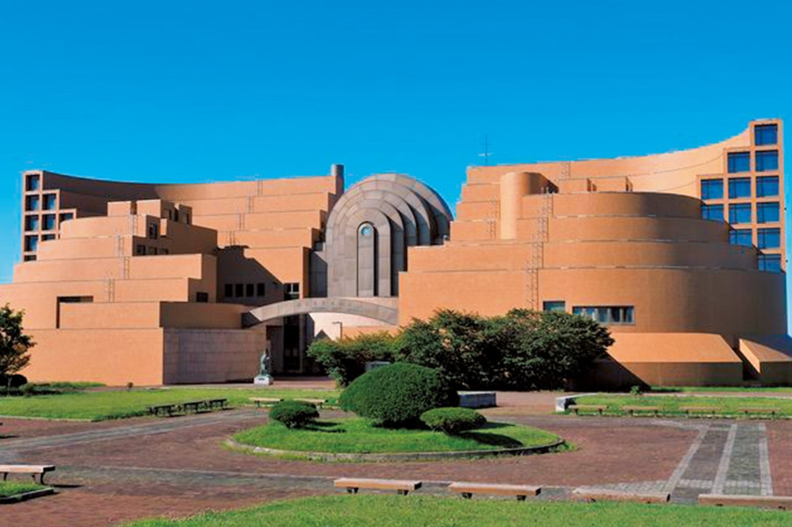
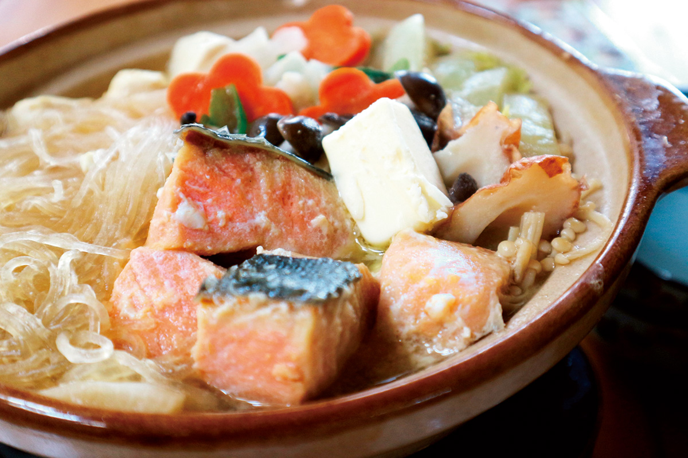
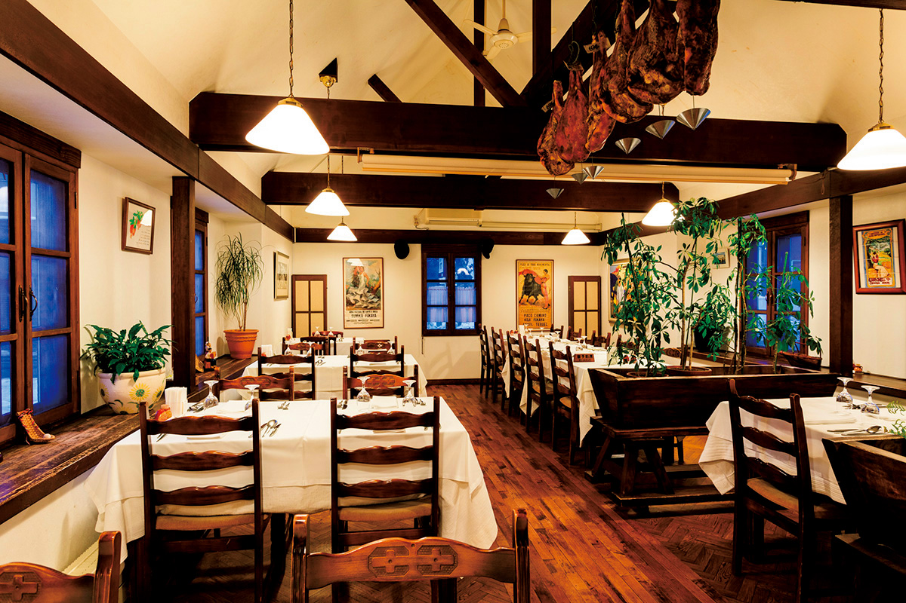
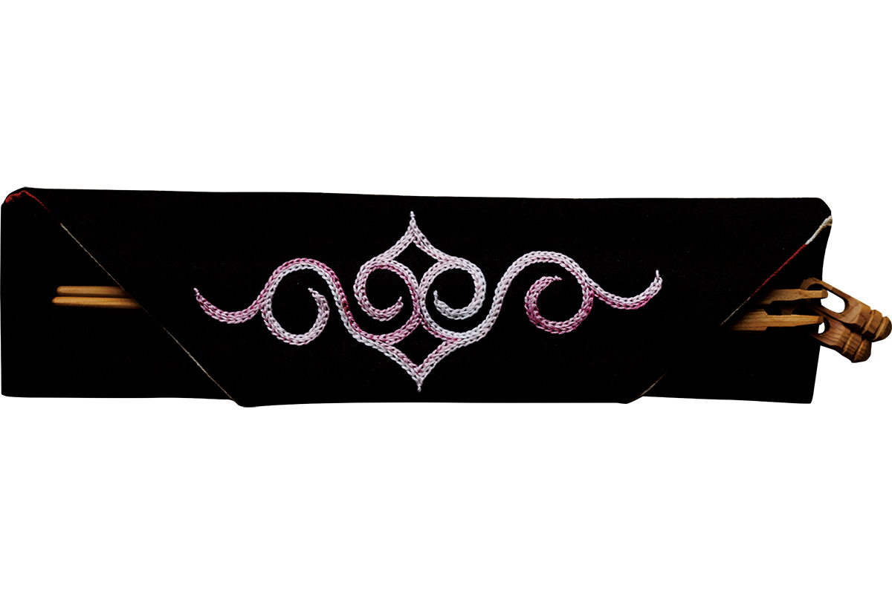
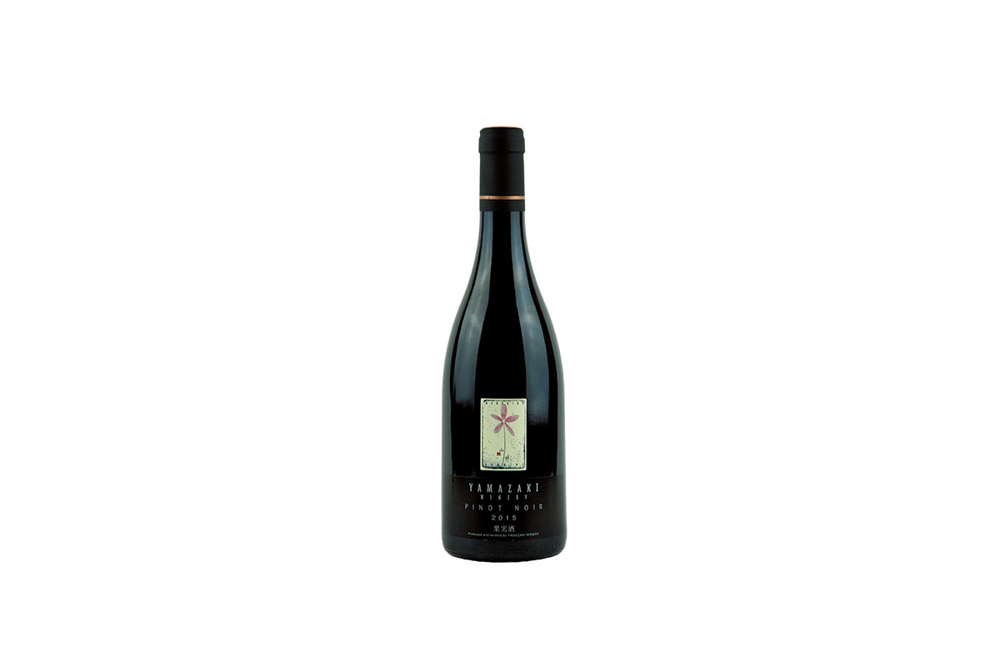
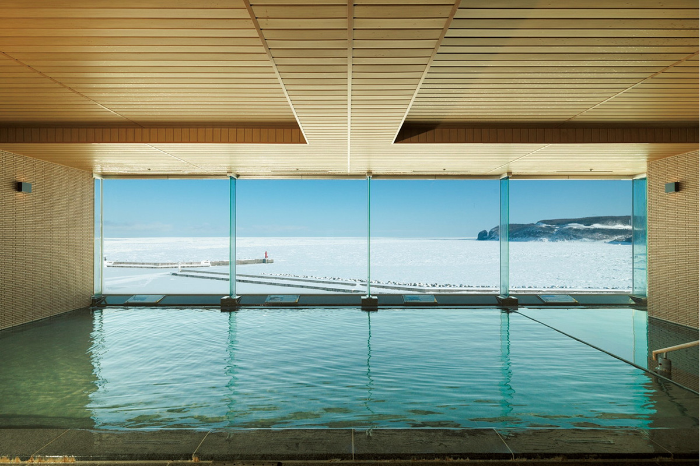

Префектура Хоккайдо
Хоккайдо: косатка у Раусу, культура айнов и 246 горячих источников

Горы полуострова Сирэтоко с ещё не стаявшим снегом отражаются в лесном озере.
На самом севере страны, где с четырёх сторон шумит вода, живут айны со своей культурой, а летом по улицам Саппоро идут танцевальные команды. Рассказываем, за чем ехать на Хоккайдо.
О префектуре
Край, который называли Эдзо
Хоккайдо лежит на самом севере страны, и с четырёх сторон его окружает вода: Тихий океан, Японское море и Охотское море. По площади это около двадцати двух процентов всей Японии, и раньше эти земли называли Эдзо. Здесь издавна жили айны, которые создали собственную культуру.
В эпоху Эдо краем управлял род Мацумаэ. После её окончания, в 1869 году, учредили ведомство по освоению земель, а Эдзо переименовали в Хоккайдо. Затем сюда пришли поселенцы из солдат, развивалось земледелие, и так сложилась основа здешнего сельского хозяйства. Но для общества и культуры айнов это обернулось тяжёлыми потерями, и многие обычаи были утрачены.
Сегодня в крае поддерживают быт айнов и сохранение их традиций. Двенадцатого июля на берегу озера Порото в посёлке Сираои открылся Упопои, центр, который рассказывает об айнах: здесь их культуру изучают и показывают сразу с нескольких сторон.
Что посмотреть
Косатка на расстоянии вытянутой руки
Косатка у Раусу
Полуостров Сирэтоко, внесённый в список всемирного природного наследия, тянется на восток, и у его восточного берега стоит город Раусу, место, где животный мир особенно богат. Если выйти в море на прогулочном судне, здесь можно увидеть диких косаток.

- Справки
- компания Shiretoko Nature Cruise
- Телефон
- +81 153-87-4001
Что ещё посмотреть
- Зоопарк Асахияма, зоопарк в Асахикаве с открытыми вольерами
- Национальный парк Сирэтоко, полуостров с медведями и водопадами
- Крепость Горёкаку, звездообразная крепость в Хакодате
Праздники
Два танца, сведённые в один
Праздник Ёсакои Соран
Этот праздник собрали из двух частей: танцевального праздника ёсакои из Коти и здешней песни рыбаков соран. Команды идут по городу одна за другой, и у каждой своя музыка, костюмы и рисунок движения, поэтому зрители стоят вдоль улицы до самого вечера.

- Период
- начало и середина июня
- Место
- парк Оодори и центральные кварталы Саппоро
Другие праздники
- Снежный фестиваль в Саппоро, зимние снежные и ледяные скульптуры
- Праздник дрейфующего льда, зимние шествия на северном берегу
- Шествие в Эсаси, осенний обряд у святилища Убагами
Музеи и архитектура
Дом в форме птицы с раскрытыми крыльями
Музей города Кусиро
Здание построили в 1983 году по проекту архитектора Модзуна Кико, который родился в самом Кусиро. Форма дома повторяет птицу: два крыла раскрыты в стороны, а вытянутая центральная часть читается как шея, поэтому здешний музей узнают по одной этой линии.

- Адрес
- 1-7 Shunkodai, Kushiro, Hokkaido
- Телефон
- +81 154-41-5809
Что ещё посмотреть
- Часовая башня Саппоро, старый деревянный дом с часами
- Бывшее управление Хоккайдо, кирпичное здание с красным фасадом
- Музей тюрьмы Абасири, старая тюремная постройка из брёвен
Местная кухня
Суп из лосося в глиняном горшке
Исикари-набэ
Этот суп варят на мисо, а в горшок кладут главное, то есть нарезанного кусками лосося вместе с хребтом и головой, а также тофу и овощи. В самом конце в суп добавляют немного молотого перца сансё, и это меняет вкус всей похлёбки.

Что ещё попробовать
- Дзингисукан, баранина на выпуклой жаровне
- Имомоти, лепёшки из тёртого картофеля
- Кальмаровые шумай, паровые пельмени с кальмаром
Где поесть
Испанский подвал на севере
Ресторан «Баск»
Шеф Фукая Кодзи учился в Испании и, вернувшись, открыл в 1981 году этот ресторан, где готовят кухню басков. Кроме обычных ужинов здесь устраивают «барную улицу», когда гости вечером переходят из одного заведения в другое.

- Адрес
- 1-4 Shoin-cho, Hakodate, Hokkaido
- Телефон
- +81 138-56-1570
- Часы
- с 11:30 до 14:30 и с 17:00 до 21:30, в воскресенье до 21:00
- Выходные
- среда
- Сайт
- vascu.com
Ремёсла
Узор айнов на тёмном сукне
Мастерские Акан-айну-котан
В деревне у озера Акан рядом работают резчики по дереву, в том числе те, кого знают далеко за пределами края. Здесь же продают вещи с узором айнов: шитьё по тёмному сукну, вырезанную из дерева посуду и мелкие предметы для дома.

- Справки
- магазин народных вещей Chinita
- Телефон
- +81 154-67-2413
Что привезти
Вино с холмов Микасы
Вино завода Ямадзаки
Виноград здесь растёт на холмах Танно в городе Микаса, и там же его превращают в вино. Хозяйство семейное, поэтому вина выпускают ограниченными партиями, а бутылка стоит от 2500 иен.

- Телефон
- +81 1267-4-4410
Где остановиться
Купель, из которой видно море
Гостиница «Китакобуси» в Сирэтоко
Отель стоит в Уторо, у самого Охотского моря, и из окон видно, как мимо идут рыбацкие и прогулочные суда. Зимой прямо с берега открывается поле дрейфующего льда, и гости приезжают сюда ради этого вида.

- Адрес
- 172 Utoro-higashi, Shari, Hokkaido
- Телефон
- +81 152-24-2021
- Комнат
- 180, из них 32 в западном крыле
- Цена
- от 17 670 иен за ночь с двумя приёмами пищи, налоги и банный сбор отдельно
- Сайт
- shiretoko.co.jp
Местный диалект
Как здесь говорят «очень вкусно»
- намара, умайсёочень вкусно
- сибарэру наочень холодно
- дзёппин карузапереть дверь
- ситаккэ нэдо встречи
Рекорды
В чём Хоккайдо первый
- №1 доля и сбор сахарной свёклы: первое место в стране
- №1 площадь лесов: первое место
- №1 источники Ноборибэцу: первое место среди всех на Хоккайдо
Вопросы и ответы
Что ещё спрашивают о Хоккайдо
Какой город получил имя в честь места, откуда приехали переселенцы?
Китахиросима. В эпоху Мэйдзи люди, приехавшие осваивать землю, назвали новое место по своей родине, и так появилось это имя. Кроме него на Хоккайдо есть районы с именами Ямагути, Айти и Токусима, то есть те же, что у других префектур.
Какая еда здесь любима сильнее, чем рамэн?
Якисоба-бэнто, лапша в чашке с соусом, которую выпускает компания Toyo Suisan и продают только на Хоккайдо. По доле на рынке лапши в чашке остров сильно опережает остальных, а местные зовут её коротко «якибэн».
Справочник
Хоккайдо в цифрах
Общие сведения
| Административный центр | Саппоро |
| Муниципалитеты | 35 городов, 129 посёлков, 15 деревень |
| Площадь | 83 424 кв. км |
| Население | 5,29 млн человек |
| Плотность населения | 67,4 человека на кв. км |
| Туристов в год | 55,2 млн |
| Дерево края | ель аянская |
| Цветок края | шиповник морщинистый |
| Птица края | японский журавль |
Климат
| Средняя температура | +9,5 |
| Максимум | +25,7 |
| Минимум | минус 7,6 |
| Осадки | 1282 мм |
| Ясных дней | 10 |
| Дождливых дней | 157 |
| Снежных дней | 131 |
Для путешественника
| Онсэнов | 246 |
| Гостиниц и рёканов | 2936 |
| Музеев искусств | 17 |
| Музеев | 47 |
| Митиноэки, придорожных станций | 125 |
| Национальное сокровище | глиняная фигурка догу из собрания музея Хакодате |
| Важных культурных ценностей | 61, из них 1 национальное сокровище |
| Исторических мест | 55 |
| Живописных мест | 3 |
| Природных памятников | 47 |
| Всемирное наследие | полуостров Сирэтоко |
| Национальные парки | Акан-Масю, Дайсэцудзан, Сикоцу-Тоя, Рисири-Рэбун-Саробэцу, всего 11 |
Природные памятники
- Белка эдзо, небольшая белка здешних лесов
- Рыбный филин, крупная сова у рек
- Бурый медведь, хозяин здешней тайги
- Японский журавль, птица края, которую здесь охраняют
- Олень эдзо, стада на равнинах
- Тупик-носорог, морская птица с ярким клювом